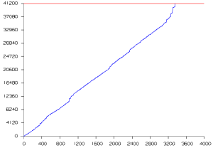

NX Nastran 解算方案监视器将实时显示关于当前求解进度的信息，有些解算方案监视器绘制的信息包括：
解算方案信息 — 显示.f04 文件
稀疏矩阵求解器 — 绘制已完成方程的数量
迭代求解器收敛 — 绘制迭代计算的收敛信息
特征值抽取 — 绘制抽取的特征值数量
需要 Nastran 版本 6.0 或更高。
|

|
在求解过程中，一个或多个图像将显示生成的进度或收敛信息，您可以通过点击显示在监视器窗口上方的选项卡来访问各个图像，可以在图像生成过程中实时查看，或者在求解完成时查看所有图像。
显示的信息取决于您正在运行的 NX Nastran 版本、模型设置以及解算方案类型。
使用解算方案监视器来监视求解器的收敛，并评估解算所需的剩余时间，根据监视器的输出，您可能想取消求解、改善模型或者调整仿真参数。